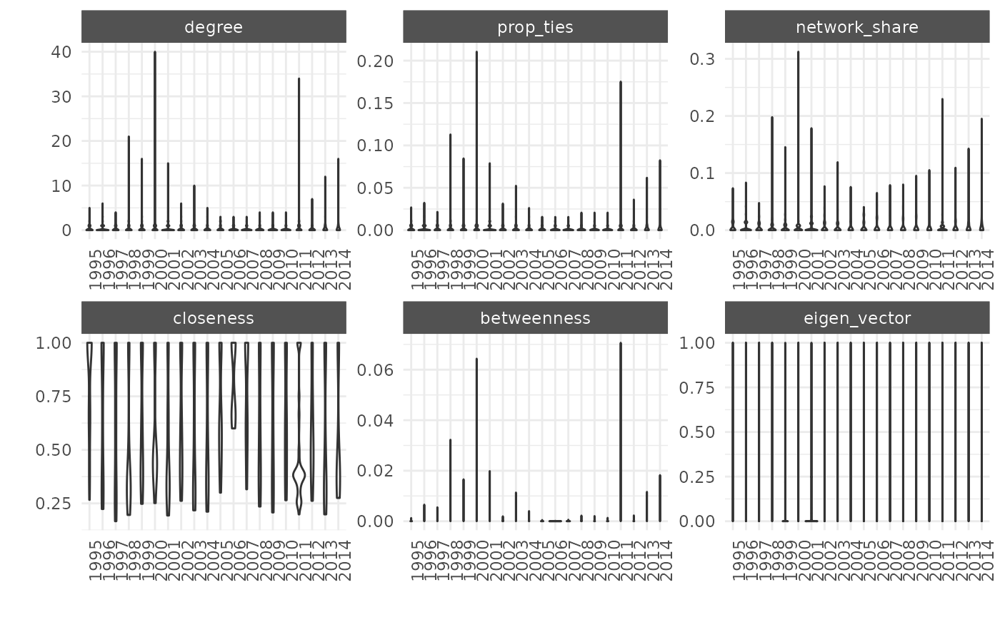

Netify Workshop
Cassy Dorff and Shahryar Minhas
2024-04-29
workshop_demo.RmdPackage Overview
This vignette provides a high level overview of our package from start to finish. The best use of this vignette is to introduce the main components of the package to larger audiences. This overview covers our primary functions with data examples and minimal writing.
netify goals:
- Create: Netify your data! We Make it easy for users to create networks from raw data in \(R\) as well as add additional features, such as nodal and dyadic variables, to the network object.
- Explore: Explore characteristics of the network you created, like summary statistics at both the network and actor levels. Visualize your network.
- Advance: Advance your network analysis to the next stage by preparing it for use in other network packages and modeling approaches.
netify provides a suite of primary functions to help
achieve these goals:
| Createüí° | Explore üîé | Advance Ô∏èüöÄ |
|---|---|---|
netify() |
peek() |
prep_for_amen() |
add_nodal() |
summary() |
prep_for_igraph() |
add_dyad() |
summary_actor() |
prep_for_network() |
subset_netlet() |
plot_actorStats() |
|
plot.netify() |
netify can take dyadic data or edgelists to get
started.
-
The package can also create different types of networks including:
- cross sectional networks (with static and varying actor composition)
- longitudinal
- bipartite networks
- multilayer
-
As well as create networks with different edge types:
- weighted
- binary
- symmetric or non-symmetric
Step 1: Create üí°
Begin by loading packages and supplying the data.
# load packages
library(netify)
# install extra packages for this vignette
if('tidyverse' %in% rownames(installed.packages())){
install.packages('tidyverse', repos='https://cloud.r-project.org') }
if('peacesciencer' %in% rownames(installed.packages())){
install.packages('peacesciencer', repos='https://cloud.r-project.org') }
# load necessary packages for this vignette
library(peacesciencer)
library(tidyverse)
# organize external data for peacesciencer
peacesciencer::download_extdata()
# create dyadic data set over time using peacesciencer
cow_dyads <- create_dyadyears(
subset_years = c(1995:2014)
) %>%
# add mids
add_cow_mids() %>%
# add capital distance
add_capital_distance() %>%
# add democracy
add_democracy() %>%
# add gdp
add_sdp_gdp()Next, create a netlet object from the above COW data
frame using our package’s core function netify. There are a
number of useful parameters, but the most important ones to highlight
are:
-
dyad_datais a dyadic data.frame that should have at least the following variables used to specify actors:-
actor1: character indicating actor 1 variable in the data -
actor2: character indicating actor 2 variable in the data
-
netify_typeis a type of netlet object (cross-sec,longit_list, orlongit_array).
mid_long_network <- netify(
cow_dyads,
actor1='ccode1', actor2='ccode2', time='year',
weight='cowmidonset',
actor_time_uniform=FALSE,
sum_dyads=FALSE, symmetric=TRUE,
diag_to_NA=TRUE, missing_to_zero=FALSE,
nodal_vars = c('v2x_polyarchy1', 'v2x_polyarchy2'),
dyad_vars = c('capdist'),
dyad_vars_symmetric = c(TRUE, FALSE)
)## ! Warning: Converting `actor1` and/or `actor2` to character vector(s).Congratulations you have created a network object! üéâ
We can also add nodal and dyadic data after we’ve created the network
via the add_nodal() and add_dyad()
functions.
Let’s assume that we had information about each actor in the network that we’d like to add as a nodal variable after we already made the network object. For example, lets add a variable measuring gdp for each node in the network over time:
Step 2: Explore üîé
We made a network, so let’s look at it. First, we might want to take
a peek at the network object to see if the matrix looks the
way we’d expect it to look. This function lets you glance at a specific
slice of the network if it is longitudinal or the entire network if it
is cross-sectional.
## $`2012`
## 100 101 110 115 130 135 140 145 150 155 160 165 2 20 200 205 210 211 212
## 100 NA 0 0 0 0 0 0 0 0 0 0 0 0 0 0 0 0 0 0
## 101 0 NA 0 0 0 0 0 0 0 0 0 0 0 0 0 0 0 0 0
## 110 0 0 NA 0 0 0 0 0 0 0 0 0 0 0 0 0 0 0 0
## 115 0 0 0 NA 0 0 0 0 0 0 0 0 0 0 0 0 0 0 0
## 130 0 0 0 0 NA 0 0 0 0 0 0 0 0 0 0 0 0 0 0
## 135 0 0 0 0 0 NA 0 0 0 0 0 0 0 0 0 0 0 0 0
## 140 0 0 0 0 0 0 NA 0 0 0 0 0 0 0 0 0 0 0 0
## 145 0 0 0 0 0 0 0 NA 0 0 0 0 0 0 0 0 0 0 0
## 150 0 0 0 0 0 0 0 0 NA 0 0 0 0 0 0 0 0 0 0
## 155 0 0 0 0 0 0 0 0 0 NA 0 0 0 0 0 0 0 0 0
## 160 0 0 0 0 0 0 0 0 0 0 NA 0 0 0 1 0 0 0 0
## 165 0 0 0 0 0 0 0 0 0 0 0 NA 0 0 0 0 0 0 0
## 2 0 0 0 0 0 0 0 0 0 0 0 0 NA 0 0 0 0 0 0
## 20 0 0 0 0 0 0 0 0 0 0 0 0 0 NA 0 0 0 0 0
## 200 0 0 0 0 0 0 0 0 0 0 1 0 0 0 NA 0 0 0 0
## 205 0 0 0 0 0 0 0 0 0 0 0 0 0 0 0 NA 0 0 0
## 210 0 0 0 0 0 0 0 0 0 0 0 0 0 0 0 0 NA 0 0
## 211 0 0 0 0 0 0 0 0 0 0 0 0 0 0 0 0 0 NA 0
## 212 0 0 0 0 0 0 0 0 0 0 0 0 0 0 0 0 0 0 NA
## 220 0 0 0 0 0 0 0 0 0 0 0 0 0 0 0 0 0 0 0
## 221 0 0 0 0 0 0 0 0 0 0 0 0 0 0 0 0 0 0 0
## 223 0 0 0 0 0 0 0 0 0 0 0 0 0 0 0 0 0 0 0
## 225 0 0 0 0 0 0 0 0 0 0 0 0 0 0 0 0 0 0 0
## 230 0 0 0 0 0 0 0 0 0 0 0 0 0 0 1 0 0 0 0
## 232 0 0 0 0 0 0 0 0 0 0 0 0 0 0 0 0 0 0 0
## 235 0 0 0 0 0 0 0 0 0 0 0 0 0 0 0 0 0 0 0
## 255 0 0 0 0 0 0 0 0 0 0 0 0 0 0 0 0 0 0 0
## 290 0 0 0 0 0 0 0 0 0 0 0 0 0 0 0 0 0 0 0
## 305 0 0 0 0 0 0 0 0 0 0 0 0 0 0 0 0 0 0 0
## 31 0 0 0 0 0 0 0 0 0 0 0 0 0 0 0 0 0 0 0
## 220 221 223 225 230 232 235 255 290 305 31
## 100 0 0 0 0 0 0 0 0 0 0 0
## 101 0 0 0 0 0 0 0 0 0 0 0
## 110 0 0 0 0 0 0 0 0 0 0 0
## 115 0 0 0 0 0 0 0 0 0 0 0
## 130 0 0 0 0 0 0 0 0 0 0 0
## 135 0 0 0 0 0 0 0 0 0 0 0
## 140 0 0 0 0 0 0 0 0 0 0 0
## 145 0 0 0 0 0 0 0 0 0 0 0
## 150 0 0 0 0 0 0 0 0 0 0 0
## 155 0 0 0 0 0 0 0 0 0 0 0
## 160 0 0 0 0 0 0 0 0 0 0 0
## 165 0 0 0 0 0 0 0 0 0 0 0
## 2 0 0 0 0 0 0 0 0 0 0 0
## 20 0 0 0 0 0 0 0 0 0 0 0
## 200 0 0 0 0 1 0 0 0 0 0 0
## 205 0 0 0 0 0 0 0 0 0 0 0
## 210 0 0 0 0 0 0 0 0 0 0 0
## 211 0 0 0 0 0 0 0 0 0 0 0
## 212 0 0 0 0 0 0 0 0 0 0 0
## 220 NA 0 0 0 0 0 0 0 0 0 0
## 221 0 NA 0 0 0 0 0 0 0 0 0
## 223 0 0 NA 0 0 0 0 0 0 0 0
## 225 0 0 0 NA 0 0 0 0 0 0 0
## 230 0 0 0 0 NA 0 0 0 0 0 0
## 232 0 0 0 0 0 NA 0 0 0 0 0
## 235 0 0 0 0 0 0 NA 0 0 0 0
## 255 0 0 0 0 0 0 0 NA 0 0 0
## 290 0 0 0 0 0 0 0 0 NA 0 0
## 305 0 0 0 0 0 0 0 0 0 NA 0
## 31 0 0 0 0 0 0 0 0 0 0 NANext, let’s examine a few basic summary statistics about the network
using our summary() function.
# create data.frame that provides network-level summary stats
# for each year of the network
summary(mid_long_network)## net numActors dens recip sdSendEff sdRecEff srCov
## 1 1995 187 0.001955034 1 0.003682730 0.003682730 1
## 2 1996 187 0.002070036 1 0.004669017 0.004669017 1
## 3 1997 187 0.002415042 1 0.004635435 0.004635435 1
## 4 1998 187 0.003047553 1 0.009558454 0.009558454 1
## 5 1999 190 0.003063214 1 0.008328690 0.008328690 1
## 6 2000 191 0.003527142 1 0.015623411 0.015623411 1
## 7 2001 191 0.002314687 1 0.006798900 0.006798900 1
## 8 2002 192 0.002126963 1 0.004357630 0.004357630 1
## 9 2003 192 0.002290576 1 0.005660381 0.005660381 1
## 10 2004 192 0.001799738 1 0.004240794 0.004240794 1
## 11 2005 192 0.002017888 1 0.003963836 0.003963836 1
## 12 2006 193 0.001241364 1 0.002984306 0.002984306 1
## 13 2007 193 0.001025475 1 0.002723973 0.002723973 1
## 14 2008 194 0.001335399 1 0.003481020 0.003481020 1
## 15 2009 194 0.001121735 1 0.003095967 0.003095967 1
## 16 2010 194 0.001014903 1 0.002996641 0.002996641 1
## 17 2011 195 0.003912239 1 0.013606080 0.013606080 1
## 18 2012 195 0.001691779 1 0.004394395 0.004394395 1
## 19 2013 195 0.002220460 1 0.006078981 0.006078981 1
## 20 2014 195 0.002167592 1 0.007285231 0.007285231 1We might also want to look at a specific set of actors’ statistics
overtime. Our built-in function, summary_actor will
calculate in-degree, out-degree, average degree, and eigenvector
centrality for each actor in each time period.
# every year & every actor (messy!)
summary_actor_mids <- summary_actor(mid_long_network)
# top 5 GDP countries
top_5 <-c("2", "710", "740", "750", "200")
# zoom in on specific parts of the network for actor viz
mid_subset <- summary_actor_mids %>%
filter(actor %in% top_5)
plot_actorStats(mid_subset,
net_stat = "degree",
longitudinal = TRUE) +
facet_wrap(~actor)
Instead of looking at summary statistics, we also might want to simply visualize the entire network. We can do this by plotting the netify object. Or we can first subset the object so that we plot only select time periods.
plot.netify(mid_long_network)
Step 3: Advance üöÄ
Once we have created and explored our network object, we might want
to continue analyzing the data using different modeling approaches.
netify makes this simple!
# install (if necessary) and load amen
if('amen' %in% rownames(installed.packages())){
install.packages('amen', repos='https://cloud.r-project.org') }## Installing package into '/home/runner/work/_temp/Library'
## (as 'lib' is unspecified)
library(amen)
# install (if necessary) and load ergm
if('ergm' %in% rownames(installed.packages())){
install.packages('ergm', repos='https://cloud.r-project.org') }## Installing package into '/home/runner/work/_temp/Library'
## (as 'lib' is unspecified)## Loading required package: network##
## 'network' 1.18.2 (2023-12-04), part of the Statnet Project
## * 'news(package="network")' for changes since last version
## * 'citation("network")' for citation information
## * 'https://statnet.org' for help, support, and other information## Registered S3 methods overwritten by 'ergm':
## method from
## simulate.formula lme4
## simulate.formula_lhs lme4##
## 'ergm' 4.6.0 (2023-12-17), part of the Statnet Project
## * 'news(package="ergm")' for changes since last version
## * 'citation("ergm")' for citation information
## * 'https://statnet.org' for help, support, and other information## 'ergm' 4 is a major update that introduces some backwards-incompatible
## changes. Please type 'news(package="ergm")' for a list of major
## changes.
# lets take a cross-section of the network object